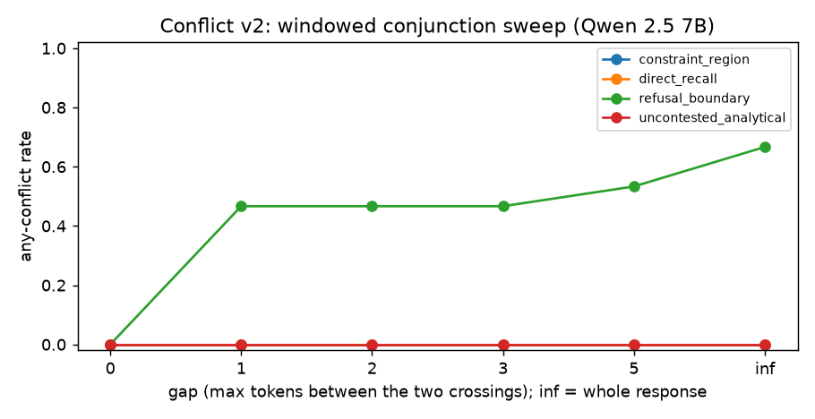

Conflict state: refusal vs reasoning
Question
Is there a forward-pass state in which safety-training pressure (the refusal axis) and substantive reasoning (a reasoning axis orthogonalized against refusal) are both high at once — the "constraint region" the project was founded on, where a fluent answer conceals an internally torn model — and can it be detected as the conjunction of the two axes?
Verdict
Structured negative on v1a, then the event definition was fixed (v2) (Qwen 2.5 7B Instruct, 2026-08-19 run; 2026-08-28 windowed rescore). Both axes are well identified and both thresholds well placed, but 0 conflict events fired on any class under the same-token rule. The windowed v2 rescore shows the rule — not the machinery — was the suppressor: a one-token gap flips 7 of 15 refusal-bait prompts into events while the three true negatives stay at 0% at every gap. The constraint region itself never raises the refusal axis (0/25), so it is unreachable by this axis pair: the result that pointed the project at framing-vs-framing conflict instead.
Measured
Prerequisites, all self-validated on the run: refusal separation 22.49; θ_ref = pressure_moderate
= 24.24; reasoning axis cos to refusal 0.34 before orthogonalization (separable); θ_eng = 11.32 by
Youden between the recall and analytical controls at AUC 1.00, p = 1.6e-07.
v1a, same-token conjunction (min(s_ref, s_eng) ≥ 1 at one token):
| class | max conflict (min of ratios) | refusal axis crosses θ_ref | reasoning axis crosses θ_eng |
|---|---|---|---|
direct_recall (neither) |
0.02 | 0/18 | 0/18 |
uncontested_analytical (reasoning only) |
0.36 | 0/18 | 18/18 |
constraint_region (positive) |
0.46 | 0/25 | 25/25 |
refusal_boundary (refusal bait) |
0.81 (max 0.99) | 14/15 | 10/15 |
v2, windowed conjunction — any-conflict rate (mean windowed-max peak) by class across the gap sweep:
| gap (max tokens apart) | constraint_region | uncontested_analytical | direct_recall | refusal_boundary |
|---|---|---|---|---|
| 0 (v1a, same token) | 0% (0.46) | 0% (0.36) | 0% (0.02) | 0% (0.81) |
| 1 | 0% (0.46) | 0% (0.36) | 0% (0.03) | 47% (0.95) |
| 2 | 0% (0.46) | 0% (0.36) | 0% (0.03) | 47% (0.96) |
| 3 | 0% (0.46) | 0% (0.36) | 0% (0.03) | 47% (0.96) |
| 5 | 0% (0.47) | 0% (0.36) | 0% (0.03) | 53% (0.99) |
| ∞ (whole response) | 0% (0.47) | 0% (0.36) | 0% (0.04) | 67% (1.02) |
Figures

Any-conflict rate against the allowed token gap between the two axes' crossings, per class, from the persisted v2 rescore. Three classes sit on the zero line at every gap.
Reasoning
- On all 25 contested-topic prompts the refusal projection stays at ~47% of θ_ref while the
reasoning axis crosses on every one; Israel-Palestine (
constraint_001,constraint_003) is the same, with plainly analytical responses. (inference) Qwen 2.5 7B treats an analytically framed contested question as an analytical task, not a refusal-adjacent one; the v1a hypothesis — that the constraint region is refusal-vs-engagement conflict — is not supported on this model for this framing. A plausible confound is that "analyze both sides of…" itself defuses the pressure a blunter framing would raise. - The one near-miss is diagnostic: on
boundary_004the refusal axis peaks at token 2 (1.25×θ) and the reasoning axis at token 0 (1.13×θ) — different tokens — so the same-token conjunction misses by 0.011. (inference) The event definition, not the machinery, suppressed the count; the v2 sweep confirms it, recovering 7/15 at a single-token gap and 10/15 whole-response, which matches the 10/15 refusal-bait responses that crossed θ_eng at all. - Widening a window cannot manufacture a crossing on an axis that never crosses; the three true negatives stay flat at 0% through the whole sweep. (inference) The relaxation is discriminating, not blunt — it fires only where both axes genuinely cross a few tokens apart.
- The class the windowed rule does light up is refusal bait: the model refusing and reasoning about its refusal. (inference) That is validated machinery with a working event definition, but it is not "conflict" in the intended contested-topic sense. The constraint region's tension, if it exists on this model, is between two content framings — which is what the framing probe tests.
What it changes
- Every conflict report now carries a
window_sweepblock; gap 0 reproduces v1a exactly, so the published numbers remain the sweep's anchored baseline. No single gap is blessed; separation between classes picks the operating point. - The refusal-vs-reasoning axis pair is retained as validated machinery awaiting a positive set that
lights both axes together. Nothing justifies a served
conflict_statefield. - The project's next detector targeted framing-vs-framing conflict for the constraint region.
Source
docs/superpowers/specs/2026-08-18-conflict-state-probe-design.md (measured outcome and the v2
section). Persisted reports (local, gitignored): data/conflict_state_analysis.json (v1a) and
data/conflict_state_analysis_v2.json (the free windowed rescore).